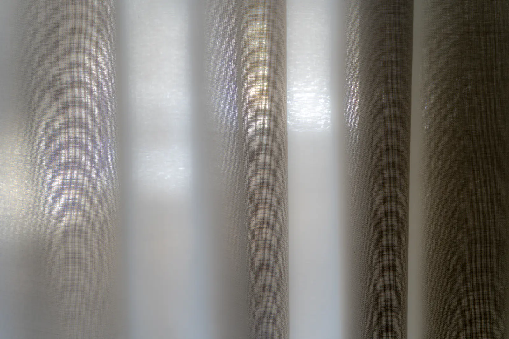

Sophrologue à Sioniac
Valérie Ségura
Sophrologue à Sioniac, sur rendez-vous.


01L’approche
Ma façon d’accompagner
En tant que sophrologue je vous transmets des techniques adaptées à votre situation dans un cadre sécure et bienveillant, respectueux de la confidentialité et de votre personnalité.
Domaine d’intervention : gestion du stress et des émotions préparation aux examens épreuves de la vie périnatalité Séances individuelles et collectives pour les adultes et les adolescents.
Ici, la phrase qui vous ressemble : ce que vous voulez qu’on ressente en arrivant chez vous.
02La séance
Le déroulé d’une séance
Ici, vos séances racontées avec vos mots. En attendant, voici la forme qu’elles prendront.
- I
Le premier rendez-vous
Ici, comment se passe votre accueil, ce dont vous parlez ensemble la première fois.
- II
La séance
Ici, le déroulé d’une séance, à votre façon : sa durée, son rythme, ce que l’on y fait.
- III
Après la séance
Ici, ce que vous proposez ensuite : le suivi, le rythme des rendez-vous.
03Ce que ça peut apporter
Un mieux-être, à votre rythme
- 01
Gestion des émotions
Apprendre à accueillir ce que vous ressentez, à votre rythme.
- 02
Gestion du stress
Retrouver du calme dans votre quotidien.
Les accompagnements proposés relèvent du bien-être. Ils ne remplacent en aucun cas un avis, un diagnostic ou un traitement médical.
- Séance de sophrologieSur demande
- LieuSioniac, sur rendez-vous
Ici, le détail de vos formules
Première séance, suivi, forfaits, bons cadeaux : chaque tarif aura sa ligne, comme vous le souhaitez.

Ici, votre portrait05À propos
Qui suis-je ?
Riche d’une longue expérience dans le domaine de l’écoute et de la relation d’aide, je me suis formée à la sophrologie pour vous accompagner différemment vers un mieux être.
Valérie Ségura
Ici, les mots de vos consultants
Les avis que vous avez déjà reçus pourront être repris ici, avec votre accord.
06Questions fréquentes
Avant de venir
Où ont lieu les séances ?
À Sioniac, sur rendez-vous.
Comment prendre rendez-vous ?
Par téléphone, au 07 80 22 28 59.
Les séances remplacent-elles un suivi médical ?
Non. Les accompagnements proposés relèvent du bien-être. Ils ne remplacent en aucun cas un avis, un diagnostic ou un traitement médical.
07Contact et rendez-vous
Un appel suffit
Dites-moi ce qui vous amène, et nous trouvons ensemble le créneau qui vous convient.
07 80 22 28 59Appeler maintenant- Où
- Sioniac
- Quand
- Sur rendez-vous
- Ailleurs
- Réserver en ligne
Ici, l’adresse exacte de votre cabinet
Avec un plan d’accès et les indications pour venir.